フェのチェー
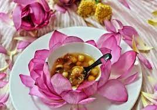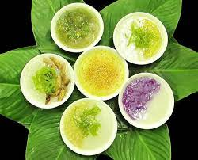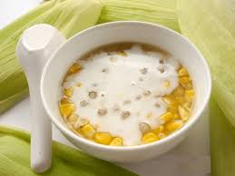
色相もお茶の国と考えられています。 さまざまな種類の果物、果物の種、塊茎、キビなどもお茶に加工され、ローストポークでさえフエ茶の世界に入ります。 提供するお茶、逃した食事を食べること、食事の後にデザートを食べること、パーティー、軽食をとること、食べること、あなたを助けるために食べること... 色相料理には50種類以上のお茶があります。
フェのバンベオ
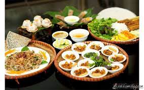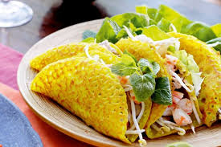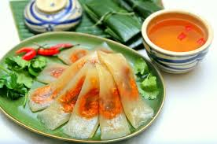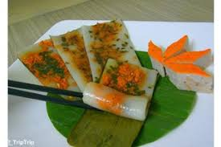
フエの民謡は基本的にベトナム人の伝統的な食事モデルであり、フエの住民のスタイルで作られています。 ベトナムの他の地域と同様に、フエの人々は時間の区分に従って食事を整理し、主に「朝食」の特徴を備えた朝食と、夕方と正午の2つの主要な食事で構成されています。
フェのブンボ
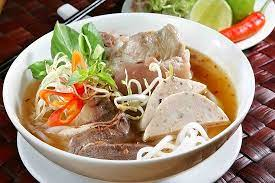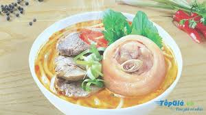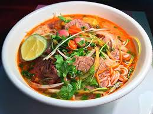
ブンボーフエは、「ブンボーフエ」または「ブンボーフエポーク」という通称でよく知られています。 実際、フエ春雨は非常に多様で、牛肉の春雨、豚の春雨、豚のパンボーに加えて、水春雨、乾燥春雨、混合春雨の形で数十種類の春雨がありますが、最も多様なのはまだ品種です。めんつゆ
フェのネム
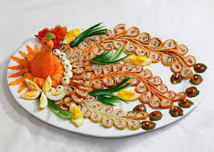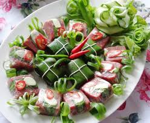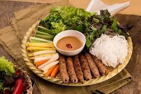